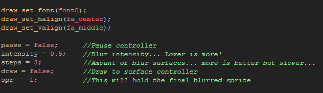
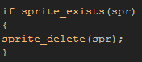
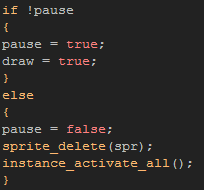
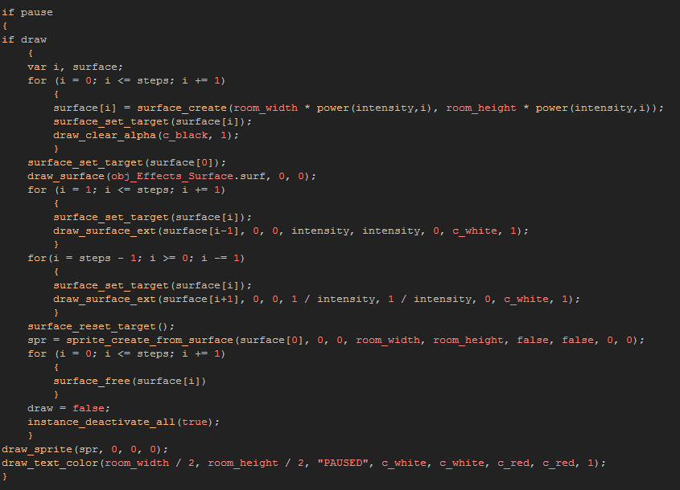

Tutorial
Page 9 of 10
Special Effects Part III
The final thing that this tutorial is going to cover is the ability to use surfaces to create new sprites. This is a very handy tool and can be used, for example, to combine sprite components into one single sprite for
playing the game, or for creating new sprites from sections of the screen. Here we are going to use surfaces to blur the images in our game and then create a new sprite from the blurred image as a pause screen.
For this to work, we don't need to make a new surface object, as we can re-use the "obj_Effects_Surface" as it already contains all the screen information (it's linked to view[0], remember?), but we will need to
create another new object. Do that now and call it "obj_Pause", and give the new object a depth of -10000 so it is drawn over everything else.
Now, add a create event to the object and in that add the following:

These are the control variables for our pause object, and as you can see you can adjust some of them to get different effects. Once we are finished her, come back to this event and play with the variables to see what
difference changing the values makes.
Now add a room end event with this code:

Just like with surfaces, creating sprites uses up memory, so you must remember to clean up after you or else you will get memory leaks. Next we should make a keyboard pressed event for the
backspace key and add this:

This will simply toggle the control variables as well as remove the sprite we are going to make when un-paused and re-activate the game instances, which we will have de-activated in the draw event. Let's add the
draw event now which is where all the work for this effect is going to be done.
Now, before adding any code to the draw event, lets go over a bit of theory... To create a blurred screen-shot of our game screen, we are going to take advantage of interpolation. Basically, interpolation
takes into consideration the the surrounding pixels of each individual pixel when scaling or drawing outside of exact coordinates. This is great for creating smooth gradients and to make movement look smoother, but
it is also essential to this effect! Note that this can be toggled on and off in the Global Games Settings or in code using texture_set_interpolation, so even if you have a pixel perfect game
with no interpolation, you can switch interpolation on and off with code as you need it...
We are also going to use multiple surfaces to achieve the effect too. We already have the base surface stored in the controller "obj_Effects_Surface" which holds the image of the screen as it is drawn, but we need to
somehow scale that image to blur it, and the best way to do that is using surfaces. With that in mind, lets now add our code into the draw even:

As with previous code blocks, let's just briefly go through what this does:
- First we check to see if the variables are correct to create the effect.
- Next, we have a
for loop that creates multiple surfaces, each one smaller than the last with the size based on the "intensity" value in relation to the screen size.
- With the surfaces created, we set the draw target to the first one, and draw the screen to it (taken from the surface stored in the "obj_Effects_Surface" object).
- Now we have another
for loop that sets the surface targets and draws the previous surface to it (so surface[0] is drawn on surface[1] and surface[1] is drawn on surface[2] etc...), with
each surface being drawn scaled down. This scaling means that interpolation will blur the pixels!
- We now do another loop to scale the smallest surface image UP to the full screen surface. Again, interpolation will blur the image still more.
- Next we create a sprite from surface[0] and then run a last
for loop to remove all the temporary surfaces from memory.
- Finally we set the "draw" variable to false so that this code will not run again and deactivate all the instances in the game except the pause instance.
Once that is done, the newly created sprite is drawn on the screen with the words "PAUSED".
Add an instance of this object into your game and play, pressing the backspace key to pause the game.
Click on the Next button to go to the next page of the tutorial.